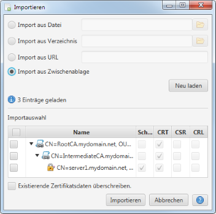

Importieren
&Uml;ber diesen Dialog können Zertifikate aus externen Datenquellen importiert werden.

F¨r den Import können verschiedene Datenquellen ausgewählt werden:
- Datei
Zertifkate werden aus einer Datei gelesen.
- Verzeichnis
Zertifkate werden aus den Dateien in einem Verzeichnis (inkl. Unter-Verzeichnissen) gelesen.
- URL
Zertifikate werden aus den ¨ber eine URL erreichbaren Daten gelesen.
- Zwischenablage
Zertifikate werden aus den aktuell in der Zwischenablage befindlichen Daten gelesen.
Nach der Auswahl der Datenquelle wertet die Anwendung die Daten auf unterstützte Datenformate (PEM und PKCS#12)
hin aus und zeigt die gefundenen Zertifkate zur Auswahl an. Wird dabei ein verschlüsseltes Zertifikat-Objekt
gefunden, wird ein Passwort für den Zugriff abgefragt.
Neu laden wertet die Daten erneut aus (z.B. nach einer manuellen Anpassung des Dateinamens).
Die gefundenen Zertifikate können im Anschluss ausgewertet und importiert werden. Das Standardverhalte beim
Import ist, dass bereits existierende Zertifkat-Elemente beim Import ignoriert werden. Durch die &UumL;berschreiben-Option
kann Anwendung angewiesen werden, bereits existierende Zertifkat-Element immer zu überschreiben.